登場角色
序章 銀月茶館
第一章 公會的沉默委託
第二章 老教授的茶會
第三章 星砂綠洲的灰水
第四章 沉砂工坊
第五章 控制室的決定
尾聲
CHARACTERS登場角色
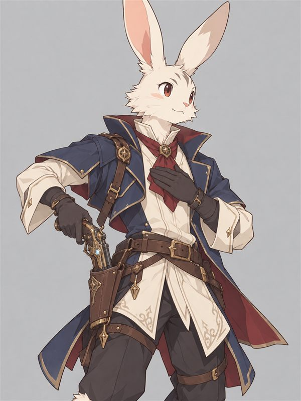
傑爾特
站起來走路的白兔紳士，腰間兩把魔動手槍。從小在學院的書堆和機器零件裡長大，禮貌又冷靜，卻一直不知道自己想做什麼。聽說冒險者又帥又受歡迎，就上路了。
專長 女士優先、抽煙
語言 通用語、古代語
目標 找尋人生的目標（順便交到女朋友）
PROLOGUE序章 銀月茶館
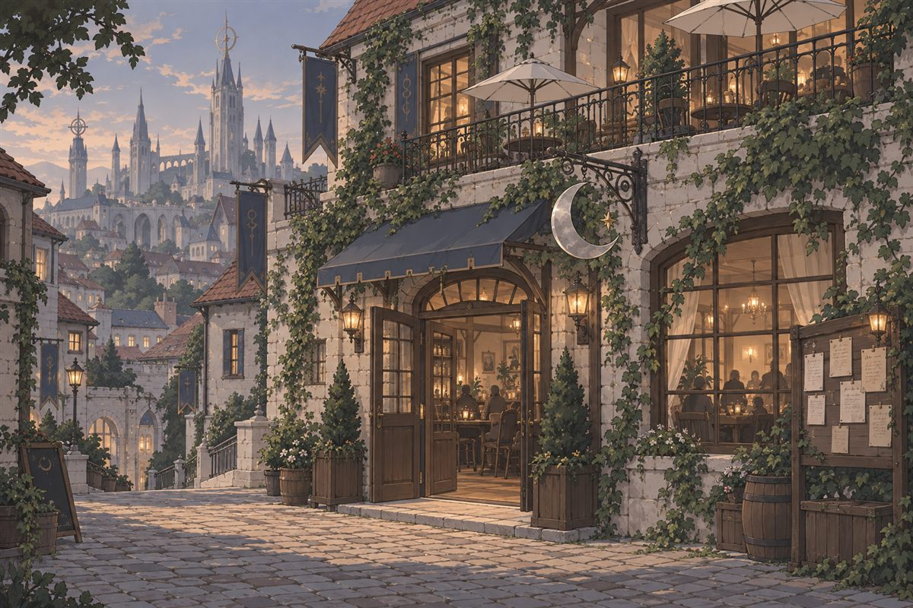
午後的陽光斜斜照在常春藤石牆上，門口的銀色月牙招牌輕輕晃了一下。
傑爾特推門走進來。腰間兩把魔動手槍，口袋裡是全部家當——一百加梅爾。
店裡飄著紅茶和剛出爐烤餅的香味，角落有人輕輕拉著弦樂。窗邊坐著一位金髮的妖精女子，正低頭翻書，桌上的紅茶早就不冒煙了。
吧台後的老闆娘抬起頭，微笑的時機剛剛好。「歡迎光臨銀月。先生第一次來吧？要喝點什麼，還是……來找點別的？」
傑爾特輕輕靠上吧台，口氣像個熟客：「給我一杯老樣子吧。」
老闆娘擦杯子的手停了半拍，接著笑出聲。「老樣子啊……」她上下打量這隻白兔紳士，沏了一壺琥珀色的紅茶，附上一小碟蜂蜜，「那就當作是你以後的老樣子吧。」
她壓低聲音：「會在這種時候說『老樣子』的人，通常是想讓別人以為他不是新手。先生是想找工作吧？」
傑爾特優雅地抿了一口茶，長耳朵微微一動。「找工作？不，與其說是工作……我想找的，是一段轟轟烈烈的愛情。」
「那你可來對地方了，也來錯了地方。」老闆娘用手背掩著嘴笑，「愛情不會釘在布告板上。不過轟轟烈烈的事倒是不少。」
窗邊傳來一聲很輕的「啪」。妖精女子把書合上了，沒有轉頭。
「……在這裡說這種話的人，通常活不太久呢。」
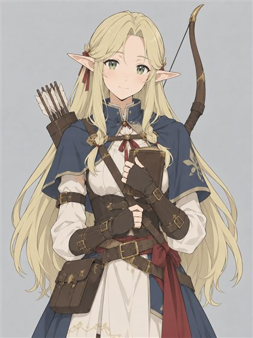
薇爾妮亞 來自霜語森林的妖精女弓手，金色長髮、綠色眼睛。說話慢、有禮貌，卻有點孤僻。銀月茶館的常客。
傑爾特的視線落在她手上的書。「那本是詩集吧？其實是本好書唷……要是妳真的有看進去的話。」
薇爾妮亞終於轉過頭，綠色的眼睛靜靜看了他好一會兒。
「……你的觀察力，比你的情話好。」她把書翻過來——是一本舊的森林植物圖鑑，書籤停在第三頁，已經停了一整個下午。「我在等人。或者說，在看誰會來。你是第一個注意到我在看的人。」
「真巧，」傑爾特舉杯致意，「我也在等人。等一個會喜歡我的人。」
薇爾妮亞愣了一下，嘴角好像動了動，又轉回窗外。「……那祝你好運，兔子先生。」
老闆娘搖搖頭，從抽屜裡抽出一封用銀色墨水寫的信，蓋好印章推過來。
「嘴甜，可是不浮誇，還懂得看人。拿著。要找正經的活，就去冒險者公會找艾琳；要是想先弄清楚自己在幹嘛，就回學院找個老人家聊聊。」她眨眨眼，「兩邊都比在我這裡等愛情有用。」
傑爾特假裝研究茶碟上的花紋，用眼角餘光偷偷瞄著窗邊。薇爾妮亞沒有臉紅，也沒有偷看他——她的視線冷靜地在老闆娘、推薦信和店門口之間來回，像在評估一件東西值不值得信任。
……看來這段轟轟烈烈的愛情，今天還輪不到。
CHAPTER 1第一章 公會的沉默委託
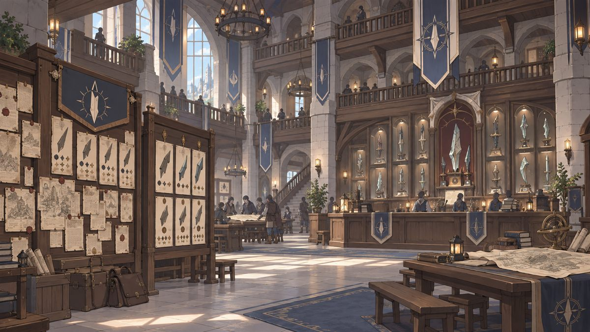
夕陽把灰石牆染成橘色。公會大廳整整齊齊，委託單照地區排好。櫃檯後的展示牆一格一格擺著歷代冒險者交回來的劍之碎片——只有最下排角落那一片，標籤被人擦得乾乾淨淨。
布告板正中央釘著一張燙金邊框的委託單：「高價收購：前往中央沙漠遺跡，取回古代機械。報酬面議。」署名只有一枚白色面具的印記。
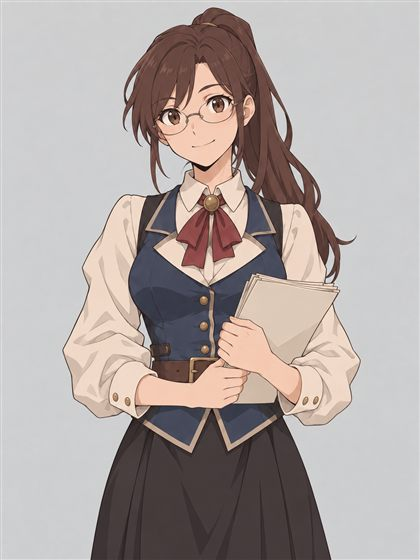
艾琳・費爾 公會櫃檯負責人。栗色馬尾、細框眼鏡，記得每個冒險者的名字，最討厭有人亂丟委託單。
「晚安，歡迎來到白塔城分部，我是艾琳。」她的視線落在那封銀色墨水的信上，「……哎呀，銀月的推薦信？這可不常見呢。請問先生今天想登記，還是想接委託？」
傑爾特把信輕輕放上櫃檯，長耳朵往前一傾。
「假若我說，我想認識的是妳呢？」
艾琳眨了眨眼，噗哧笑出來，連忙用委託簿擋住半張臉。「銀月的老闆娘怎麼會推薦這麼油嘴滑舌的兔子……」她清清喉嚨，耳根卻有點紅，「好吧，至少你很有禮貌。如果真的想『認識』我……我這裡有件不太方便公開的小事。不過你得先告訴我名字。還有，你怕不怕熱？」
「怕。但我更怕妳不理我。」傑爾特按著胸口一鞠躬，「我叫傑爾特，是個快槍俠。沙漠再熱，也擋不住我對妳的熱情。」
艾琳這回笑到肩膀都在抖。「傑爾特先生，記住了。」
她帶他走到展示牆最下排，指著那片沒有標籤的碎片。本該發著淡光的碎片，表面爬滿暗沉的黑色汙漬，一靠近就覺得一股涼意。
「這是上個月從星砂綠洲送來的。」她小聲說，「上面叫我把標籤撕掉，別再提。可是最近沙漠那邊的碎片，一片比一片黑。我想請人私下去看看……報酬不多，是我自己出的錢。」
她瞄了一眼那張燙金的面具委託。「當然，你也可以接那張，錢多很多。」
「老實說，哪一個比較讓妳困擾？」傑爾特看著她的眼睛，「要是我猜得沒錯，是綠洲那個吧。交給我。不過報酬要換一下——找個下午，陪我喝杯咖啡。」
艾琳愣住了，低頭在委託簿上寫字，筆尖有點亂。
「……紅茶。白塔城的咖啡很難喝。」她撕下一張蓋了私章的委託單塞進他手裡，「活著回來，才有下午茶。」
・・・
剛才話講得那麼漂亮，傑爾特其實從頭到尾都盯著她的眼鏡框，一次也沒敢好好看她的臉。現在趁她低頭寫字，他終於偷偷抬眼。
栗色馬尾，鏡片後一雙溫和的褐色眼睛，臉頰上有幾顆淡淡的雀斑，笑起來左邊有個小酒窩。
……很正。
而且他看見了——她在委託簿的邊角偷偷寫了「傑爾特」，旁邊還畫了一對小小的兔耳朵。發現他在看，她「啪」一聲把簿子闔上。
「還、還有什麼事嗎？」
走出公會前，傑爾特背對著櫃檯，爪子偷偷握了個小拳頭。
好欸。這次說不定有戲。
CHAPTER 2第二章 老教授的茶會
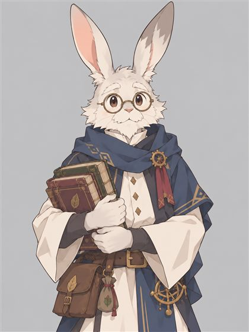
莫里斯教授 魔法學院的老塔比特學者，灰白的毛、厚厚的圓眼鏡，說話慢條斯理。傑爾特小時候常去請教的長輩。
夜裡的魔法學院很安靜。那扇從小敲過無數次的木門縫裡，透出暖黃的光和熟悉的茉莉花茶香。書堆到天花板，桌上散著拆了一半的古代齒輪，窗台上一整排茶壺。
灰白色的老兔子從扶手椅裡抬起頭，目光落在他腰間的雙槍上，長長嘆了一口氣。
「哎呀……這不是小傑爾特嗎？帶著那種東西回來，你該不會真的跑去當什麼冒險者了吧？」他還是伸手拿了個杯子，開始倒茶，「坐吧。」
傑爾特雙手接過茶杯，一臉認真：「教授，這是我一生一次的請求。您知道星砂綠洲，還有劍之碎片的事嗎？」
「你小時候為了讓我幫你修發條鳥，也說過一生一次。」莫里斯慢悠悠地吹著茶，「星砂綠洲嘛，沙漠邊的商隊小鎮，水很甜……」
說到這裡，他倒茶的手停在半空。茶水溢出杯緣，他都沒發現。
「……劍之碎片？」他從眼鏡上方盯著傑爾特，「碎片……變黑了，對吧？」
傑爾特還沒回答，他就自己點了點頭，轉頭望向窗外的黑夜，聲音輕得幾乎聽不見：
「……沉砂，又醒了嗎。」
「我有什麼需要注意的嗎，教授？」
莫里斯摘下眼鏡，慢慢擦著。「四十年前，我跟著一支隊伍進過綠洲附近的沙底，那裡有座沉砂工坊，是魔動機時代的遺跡。我們去了七個人，回來的只有我一個。」
「記住兩件事。第一，那裡的守衛機器不是瘋了，它們是在『守著』某樣東西。第二——」他的聲音沉了下來，「不管看到什麼，都不要從裡面帶走。」
說完，他的爪子移到書桌抽屜上，停住了。
傑爾特假裝在吹茶，眼角悄悄往那邊飄。抽屜縫裡透出一點黃銅的光——一把手掌大的鑰匙，齒形複雜，刻著磨損的古代語。他認得出其中兩個字：「工坊」。
莫里斯發現了他的視線。他沒有把抽屜推回去，只是嘆了口氣，把鑰匙放到桌上。
「我留著它四十年，就是不想再有人回去。可是你這雙手，天生就是碰那些機器的料……小傑爾特，我問你最後一次：你真的要去？」
傑爾特的長耳朵垂了下來。「原來教授願意讓我試試看……剛才還偷偷試探您，我真的很慚愧。」
莫里斯愣了一下，接著笑出聲，眼角的皺紋都擠在一起。「傻孩子，你從小偷看我的抽屜，哪一次我不知道？羞愧就不必了，老頭子只是要聽你親口說一句。」
茶的熱氣在兩隻兔子中間慢慢飄著。
「去。」傑爾特把鑰匙收進懷裡，「但教授，當年到底發生了什麼？不能帶走的，又是什麼？」
莫里斯沉默了很久，茶都涼了。
「工坊裡有一種會發光的機械核心，一顆一顆的，看起來……像在呼吸。」他的聲音有點啞，「隊長把一顆塞進背包。就在那一瞬間，整座工坊的守衛全醒了。我逃進最深處的房間，才撿回一條命。那個房間裡有什麼……原諒我，我到現在還說不出口。」
「你到了綠洲，也許就懂了。」
・・・
隔天一早，艾琳攤開地圖，指尖在沙漠邊緣點了點。搭商隊到星砂綠洲要七天；那邊的泉水最近「怪怪的」；要找路，就找一位叫颯羽的瑟菲爾嚮導。
她頓了頓，把一小包東西塞給他。「……沙漠的防曬藥膏。兔毛曬傷了很難看的。」
「曬傷難不難看無所謂，我們可是靠內心決勝負的……」傑爾特還是把藥膏收好，「好啦，我會顧好我的兔毛。對了，妳覺得這次有多危險？」
艾琳的笑容淡了下去。「老實說，我不知道。但那位戴面具的先生，之前雇過兩隊冒險者去沙漠，到現在……一隊都沒回來。」她把地圖邊角捏得皺皺的，「所以，別逞英雄。事情不對勁就回來。」
「放心，逃回來雖然很糗，但我可不想戀愛都沒談到就變成兔子乾。」傑爾特眨眨眼，「不知道要說什麼的話，親親抱抱我也可以唷。聽說這樣能提高生還率。」
艾琳伸手用力彈了一下他的長耳朵。
然後，她很快、很輕地繞過櫃檯，抱了他一下。只有一秒，就又退回原位，低頭假裝整理文件。
「……剩下的，等你回來再說。」
傑爾特整張臉紅到兔毛底下，長耳朵直直豎起。「交、交給我吧！絕對不會讓妳失望！」
說完，他幾乎是用跳的衝出了公會大門。
CHAPTER 3第三章 星砂綠洲的灰水
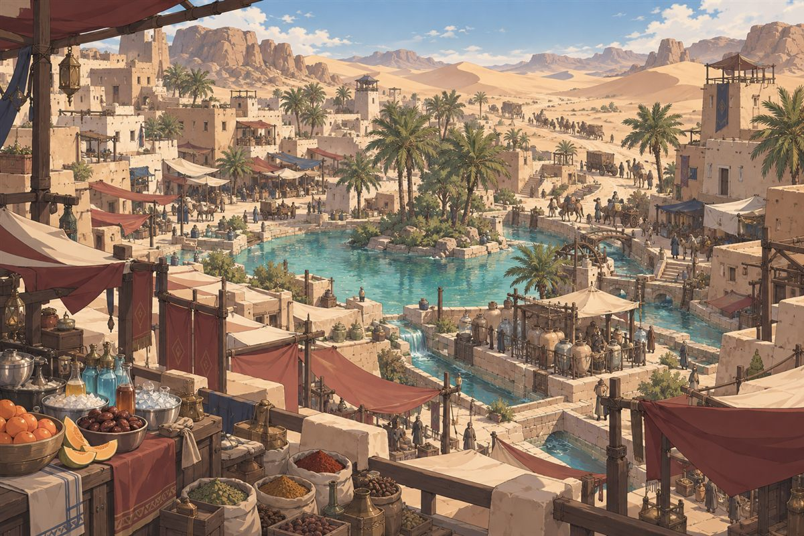
七天的駱駝背，七天的烈日。塗了艾琳給的藥膏，兔毛總算保住了。
黃昏時，商隊走進星砂綠洲。可是一走近泉邊，傑爾特就覺得不太對——水面在夕陽下本該閃著金光，邊緣卻浮著一圈淡淡的灰黑色，像墨汁滴進了水裡。打水的婦人看了一眼，默默換到另一邊去。
「喂，那邊那隻白兔子。」
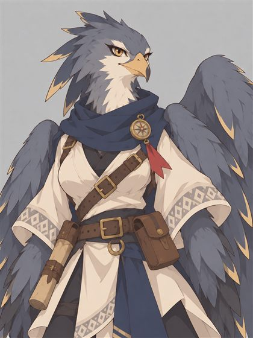
颯羽（莎拉伊） 瑟菲爾族的商隊嚮導，灰藍羽毛的鷹頭，翅膀帶著淡淡的金邊。說話爽快帶點嘲弄，喜歡站在最高的地方。
聲音從頭頂傳來。一個灰藍羽毛的鷹頭女子蹲在瞭望塔頂端，歪著頭往下看。「帶著雙槍、穿得那麼體面來沙漠？你是迷路了，還是來找死的？」
傑爾特壓了壓帽緣，抬頭一笑：「怎麼了，瑟菲爾小姐？妳平常都用這種方式搭訕嗎？我覺得直率一點，溝通通常比較有效率唷。」
她愣了半秒，放聲大笑，翅膀一張從塔頂滑下，爪子「喀」一聲落在他面前。她比他高出一大截。
「搭訕？你這兔子臉皮挺厚的嘛。好，直率一點：我叫颯羽，這一帶的嚮導。你是來做生意，還是要進沙漠？」
「我是來調查黑色碎片的。」傑爾特不動聲色地打量她，「順便看看沙漠裡有沒有好女人。」
聽到「黑色碎片」，颯羽頸邊的羽毛一下子炸開，手下意識握住胸前一根深褐色的羽毛墜飾——那顏色跟她自己的灰藍羽毛完全不同。
後半句一出口，她的眼神就冷了。「好女人？沙漠只埋得下輕浮的男人。」
她轉身要走，走了兩步又停下。「……碎片的事，你知道多少？」
傑爾特收起玩笑的語氣，把教授說的事一件一件告訴她。颯羽聽得很安靜。
「……沉砂工坊。」她握緊那根褐色羽毛，「半年前，我哥就是在那一帶不見的。只找到這根羽毛。從那之後水開始變髒，鎮上的小鬼說，晚上沙底下會『嗶——嗶——』地叫。」
「兔子，你真的要去？要去的話，我帶路。但你要是半路又油嘴滑舌，我就把你丟給沙蟲。」
「帶我去吧。」傑爾特攤攤手，「至於沙蟲嘛，牠得先打贏我，才吃得到我。」
颯羽哼了一聲，嘴角卻往上勾了一點。
・・・
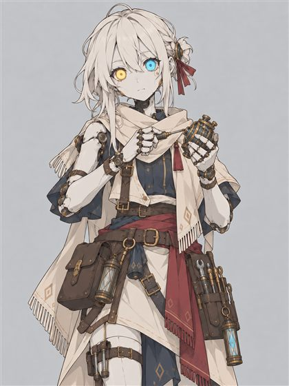
伊瑟 符文人修理師。灰白皮膚、機械接縫，一隻眼發黃光、一隻發藍光。說話平直、不太會開玩笑，對「約定」很認真。
經過一個掛著齒輪招牌的小修理攤時，颯羽停下了腳步。攤子後的灰白皮膚女子沒在修東西，而是盯著地面，用很平的聲音重複唸著：
「……一〇一一、〇〇一〇、一一〇一……」
「伊瑟又這樣了。」颯羽皺眉，「每天晚上沙底下一叫，她就開始唸。」
（傑爾特心想：最近是桃花大放送嗎……）
他蹲在攤子前仔細聽那串數字，試著在腦中拆解，拆到一半就亂了。唸聲突然停了。黃藍兩隻眼睛直直對上他，眨都沒眨。
「你看了我四十七秒。要修東西，還是有別的事？」
「我想認識妳。」傑爾特很誠懇地說。
身後傳來颯羽很大一聲嘆氣。
伊瑟歪了歪頭，眼睛的光閃了兩下。「認識。定義：取得對方的名字、功能與目的。我叫伊瑟，功能是修理。目的……」她停了很久，「目的，不明。只記得剛才那串數字。輪到你了。名字、功能、目的？」
「我是傑爾特，冒險者，擅長調查。目的是讓人生過得開開心心。」
伊瑟一動也不動地盯著他三秒。「開開心心。……這個目的，我的資料庫裡沒有。」
她看向颯羽：「你們要進沙漠。方向是東南，對嗎？那串數字，每次都指向同一個地方。」她站起來，肩膀的接縫發出輕輕的喀聲，「傑爾特。如果我跟你們去，你能和我約定，幫我找出我的目的嗎？」
「可以。」傑爾特伸出爪子，「那妳也要跟我約定：要是我幫妳找到了目的，妳就跟我約會。到時候我再告訴妳，人生還有更多目的。成交嗎？」
「約會。定義不明。」她伸出灰白的手，一板一眼地握住，「但約定成立。我會遵守。」
颯羽用翅膀捂住了鷹臉。「……我到底帶了一隻什麼兔子。」
・・・
那天夜裡，傑爾特陪伊瑟在修理攤前坐下，聊零件，聊沙漠。她修東西時習慣用右手食指輕敲桌面三下；說話前，眼睛的光會先暗一下。她撥開頭髮時，他看見她後頸有一行很小的古代語刻字：
「沉砂工坊・成品」
就在這時，遠處沙底下又傳來很輕的「嗶——」。伊瑟胸口的接縫透出一點微光，一明、一暗，一明、一暗。
就像在呼吸。
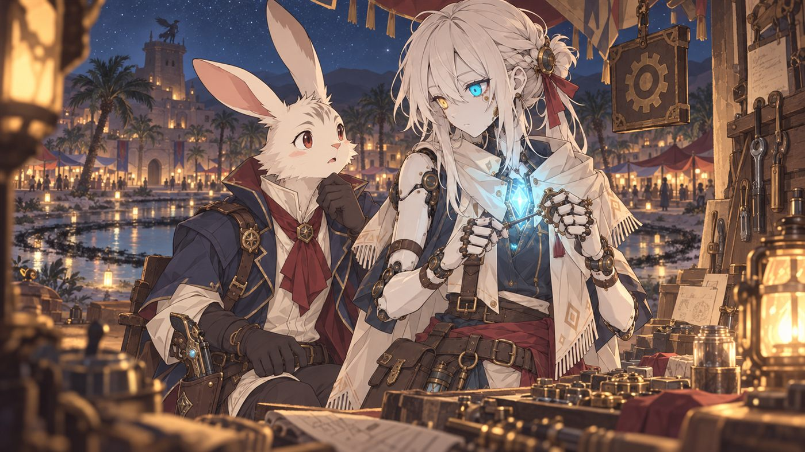
伊瑟好像完全沒發現自己在發光。她抬頭看他：「傑爾特，你的心跳變快了。為什麼？」
「伊瑟，妳有發現自己在發光嗎？」傑爾特輕聲說，停了一下，又補上一句，「還有……妳好美。」
伊瑟低頭，看見胸口的光，整個人僵住了。她伸手按住那裡，好像想把光壓回去。嗶聲停了，光也慢慢熄掉。
「美。」她小聲重複，「這個詞，第一次有人對我用。資料庫不知道該回應什麼。但是……不討厭。」
「妳想了解自己嗎？」傑爾特看著她，「如果妳想，我可以陪妳。了解這個世界，了解什麼是喜歡、什麼是討厭，還有妳自己的心是怎麼運作的。」
伊瑟的指尖在桌上敲了三下，停住。
「想。我想知道那串數字底下是什麼。也想知道……剛才『不討厭』的那個感覺，叫什麼名字。」她站起來，輕輕點了一下頭，「約定，再加一條。」
塔頂傳來颯羽的聲音：「兩個——都——去——睡——覺！」
「像這個，就叫討厭！」傑爾特指指塔頂，壓低聲音笑了，語氣放得很輕，「趕快去睡吧，不然要被丟去餵沙蟲囉。明天見，伊瑟。」
「明天見。」伊瑟點頭，「討厭，已記錄。」
CHAPTER 4第四章 沉砂工坊
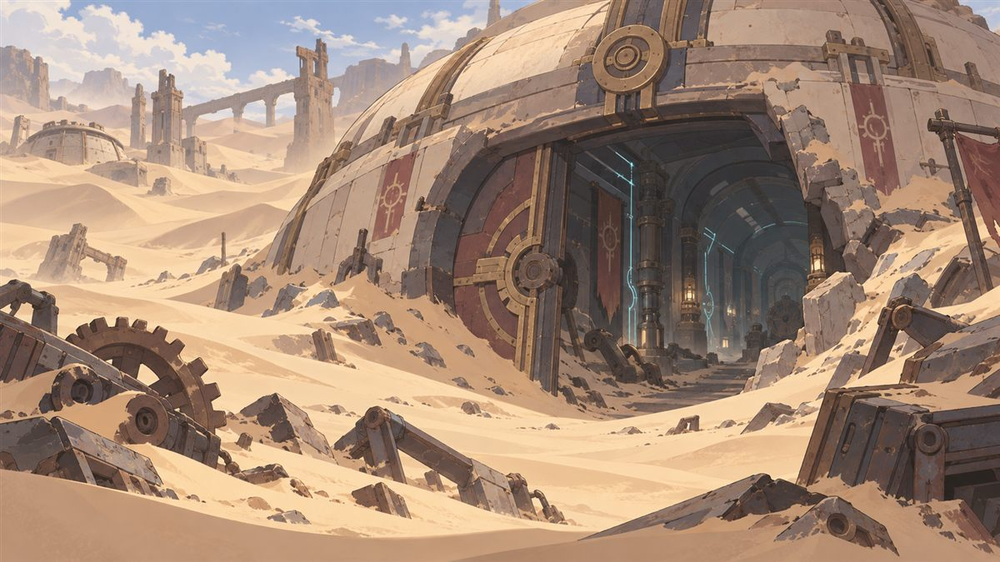
正午，颯羽落在一座沙丘頂上，翅膀一收。「……就是那裡。」
沙丘底下露出一大片金屬圓頂，像一顆被埋了一半的巨蛋。半扇金屬大門歪斜地敞著，門縫透出藍白色的微光。走廊兩側的牆嵌著細細的光線，地上散著齒輪和斷掉的機械臂，深處傳來低沉的嗡鳴，像某個巨大的東西在睡覺時呼吸。
轉角傳來「喀、喀、喀」的金屬腳步聲。一台比人還高的四足守衛機器慢慢走過，紅色鏡頭左右掃動。
懷裡的黃銅鑰匙，微微發燙。
傑爾特把它掏出來想看清楚上面的字——鑰匙比想像中還燙，他爪子一縮。
鏘啷！
鑰匙掉在金屬地板上，聲音在圓頂下迴盪了好幾圈。轉角的腳步聲停了。紅色鏡頭慢慢轉過來，停在他身上。喇叭裡傳出一串冰冷的古代語。
傑爾特一把抓起鑰匙，豎起耳朵拚命辨認：
「……偵測到持鑰者。警告：工坊命令第一條，不准任何人帶走成品。違反者，排除。」
它不是發瘋，是在守規矩。紅色鏡頭移到伊瑟身上，停了好幾秒。
「成品。編號確認。」
守衛收起前腳，往旁邊退開一步。伊瑟的聲音有點不穩：「……它說我是『成品』。」
傑爾特舉起鑰匙，用生疏但清楚的古代語問：「這把鑰匙，是做什麼用的？」
「管理者權限鑰匙。用途：開啟中央控制室。持鑰者，准許通行。——通報：另一名入侵者，已抵達控制室外。無鑰匙。持續排除中。」
颯羽猛地轉頭，抓緊了胸前的褐色羽毛。「另一個人？……會不會是我哥？」
「他們是我的同行者，請不要傷害他們。另外那一位也是。」傑爾特高舉鑰匙，「帶我們去找他。」
「同行者，登錄。另一名入侵者：不在權限內。命令駁回。」
守衛轉過身，四條腿喀喀喀地加速衝向走廊深處。
「走，跟上！」傑爾特一把牽起伊瑟的手就跑。她的手很涼，卻反握得很緊。
・・・
走廊越來越寬，嗡鳴聲越來越響。最後他們衝進一座圓形大廳，腳步一下子停住。
四面牆上排滿了玻璃艙，一格一格，一路疊到看不見的天花板。每一格裡都飄著一團淡淡的光，一明、一暗。成千上萬團光一起起伏，整個房間就像一顆巨大的心臟在跳。
大廳中央是一座爬滿古代語的操作台，上面有個鑰匙孔，形狀跟他懷裡那把一模一樣。守衛機器就停在台前，前腳高高舉起，擋住了一位穿深色外套的紳士。
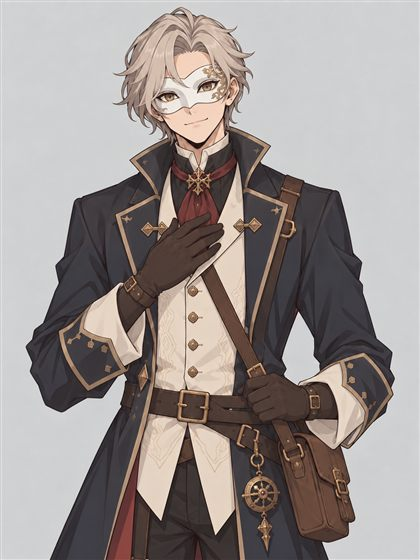
戴面具的收藏家 白色半臉面具、講究的深色外套，說話溫和有禮。左手戴著一只刻滿古代語的金屬手套。
他看到他們，竟然微微一笑，優雅地攤開手，好像被擋住的不是他。
「啊，終於。持鑰者來了。把鑰匙交給我吧，小兔子先生。報酬，你可以自己開。」
伊瑟的手在傑爾特掌心裡，一下子握得更緊了。
CHAPTER 5第五章 控制室的決定
「我可不跟連臉都不敢露的人交涉。」傑爾特直視著他，「你知道交涉最重要的是什麼嗎？是對等。」
收藏家輕輕笑了一聲。「說得好。」
他用金屬手指勾住面具邊緣，慢慢摘了下來。
面具底下的左半張臉是灰色的金屬，一片片細密的機械接縫，一隻玻璃眼珠發著暗紅的光。颯羽倒抽一口氣。伊瑟盯著那些接縫，一動也不動。
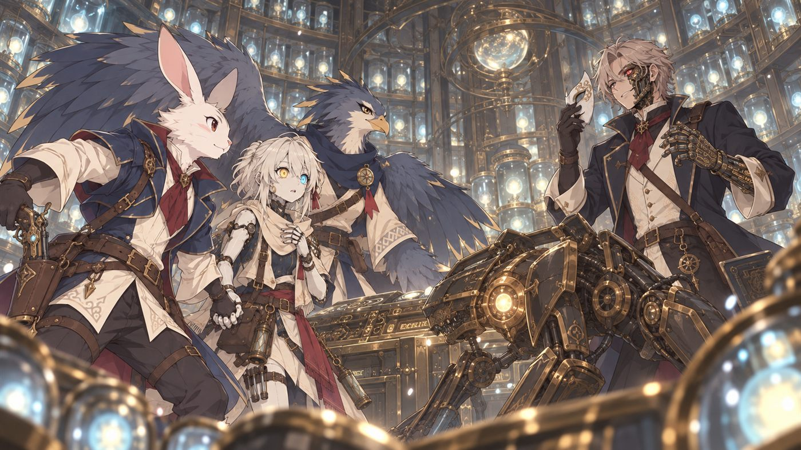
「這樣夠對等了嗎？我不要錢，也不要名聲。我只想用這個房間，讓一個人回來。」
傑爾特稍微側過身，壓低聲音：「伊瑟，妳還好嗎？」
「那些光……跟我胸口的是同一種。」她的聲音很輕，平平的語調裡第一次有了顫抖，「我好像是從那裡面出來的。台上有三個指令——釋放、管理、移交權限。」
「該不會……你的心上人還在裡面吧？」傑爾特環顧滿牆的光，語氣很隨意，「看起來，你們是個大家族呢。」
收藏家的紅眼閃了一下，沉默了一會兒，笑了，這次笑得有點累。
「聰明的兔子。這些，全都是人的靈魂。汙穢太多的靈魂會被勾住，沒辦法輪迴。這座『收魂爐』就把它們收起來，再塞進機器的身體裡當心臟。」他的目光落到伊瑟身上，「就像那位小姐。」
伊瑟的手猛地一顫。
「她死的時候，我什麼都做不了。」他握緊金屬手套，「但只要爐子全開，這一整面牆的靈魂，就夠讓她醒過來了。至於它們會怎樣……反正它們本來就回不去了，不是嗎？」
「欸，你這樣可不行。」傑爾特搖搖頭，「我可不想因為一個不知道打哪來的人，以後每天晚上做惡夢。」
「那你按『釋放』？爐子一熄，靈魂回去輪迴，汙穢洗得乾乾淨淨，綠洲的水也會變清。很美吧？」收藏家歪著頭，「只不過，這裡所有的守衛，還有所有『成品』，都會停下來。包括她。」
「要不然，你就按『管理』，一輩子待在沙底下當看門的。」
・・・
「這不是我一個人能決定的事。」傑爾特轉向兩位同伴，「不管妳們怎麼選，我都支持。」
伊瑟把手放上操作台，眼睛的光快速閃動。過了一會兒，她轉向颯羽。
「颯羽。妳哥哥還活著。身體在大廳後方那個艙裡。可是他的意識……在那台守衛裡面。」
颯羽整個人僵住，看向那台正壓住收藏家的機器。羽毛全炸了起來。
「……哥？」
守衛的紅色鏡頭，輕輕晃了一下。
「伊瑟，可以的話，我想幫颯羽把她哥哥找回來。」傑爾特說。
「按『釋放』，他的意識會回到身體，這裡所有的光也會回家。」伊瑟平靜地說，「我也會一起停下。」她抬頭看他，「我的約定已經完成一半了。我知道自己是什麼了。」
「可是我不希望妳留下來。」傑爾特握緊她的手，「我希望妳跟我一起走，一起去看看這個世界。」
伊瑟愣住了，眼睛的光停了好久都沒閃。
「……成品不准帶離。只有管理者能改這條命令。如果你成為管理者，就可以讓我走出去。可是管理者不能離這裡太遠。我們能看的世界，大概只有這片沙漠和綠洲。」
「真是難選啊，小兔子。」收藏家輕輕笑了。
・・・
傑爾特思考了一下，決定做這個一生一次的豪賭。
他把鑰匙插進操作台，轉了一圈。
「管理者，登錄。」
整座大廳的光同時亮了一下。他立刻用古代語一口氣下達一長串指令——送回颯羽的哥哥、解除伊瑟的成品身分、釋放其他靈魂……
操作台閃起刺眼的紅光。「指令衝突。無法處理。請逐條下達。」
「那你想要鑰匙的話，」傑爾特轉向收藏家，「就只留下你愛人的靈魂——」
收藏家笑了。這一次，笑得一點都不溫和。
「留下她的靈魂？你以為她在這裡？她是個乾乾淨淨的人，早就輪迴走了！我要的從來不是她，是燃料——足夠做出一個新的她的燃料！」
紅光干擾了守衛，鏡頭一閃。收藏家趁機掙脫，金屬手套伸向操作台。
「別小看冒險者了！」
傑爾特一瞬間拔出右手的魔動槍，光彈擦過金屬手套，火花四濺——卻沒能讓那隻手停下。
喀。
手套按上了操作台。古代語的紋路一路亮到收藏家的手肘，滿牆的光劇烈閃爍，嗡鳴變成刺耳的尖嘯。
「偵測到外部權限。強制移交中……」
「我才是管理者！」
「……偵測到現任管理者。移交需管理者確認。請下達指令：同意移交，或拒絕並鎖定。」
收藏家額頭冒出冷汗，紅眼瞪著他。「兔子，你撐不了多久的。這手套會一直啃掉你的權限。」
颯羽撲上去扣住他的肩膀。伊瑟站在傑爾特身邊，靜靜看著他。
「拒絕並鎖定。」
紋路瞬間由紅轉藍，一道光從台面彈出來，把金屬手套整個震開。收藏家往後跌，颯羽順勢把他按倒在地，守衛跨上前，四條腿穩穩把他圍住。
「權限鎖定。現任管理者：傑爾特。」
尖嘯停了。滿牆的光慢慢平靜下來，回到一明、一暗的呼吸節奏。遠處傳來低沉的「喀啦」一聲——爐子深處某個一直在漏的東西，終於關上了。
收藏家躺在地上望著天花板，很久之後才輕輕說了一句：「……原來，連燃料都不肯給我啊。」
「管理者。」伊瑟輕聲說，這一次帶著一點點笑意，「請逐條下達指令。」
・・・
「第一條：把颯羽哥哥的意識，送回他的身體。」
守衛機器慢慢跪下，紅色鏡頭熄滅了。一團褐色的小光從它胸口飄出，像一根羽毛一樣飄過大廳，落進後方的艙裡。艙門「嘶」一聲打開，一個褐色羽毛的瑟菲爾男子咳著坐了起來。
「……颯羽？妳怎麼……在這裡？」
颯羽一句話都說不出來。她衝過去，用那對大翅膀把哥哥整個包住。那個總是在嘲笑別人的嚮導，第一次哭得像個小孩。
過了很久，她才從翅膀裡抬起頭，紅著眼睛瞪他一眼，聲音啞啞的：「……兔子。這個人情，我記一輩子。」
「第二條：解放成品伊瑟。」
伊瑟後頸的刻字發出一道光，接著像沙一樣，一點一點剝落、消失了。她摸了摸後頸，看著自己的手，眼睛的光最後停在一個柔柔的亮度。
「……好輕。好像，第一次有了自己的重量。」她很認真地整理了一下衣領，「傑爾特。你找到我的目的了。所以，按照約定——」資料庫好像在拚命運轉，「……約會。請問，那是要在哪裡進行？」
後面的颯羽一邊扶著哥哥，一邊用翅膀遮住鳥喙偷笑。
「第三條：釋放所有剩下的靈魂。」傑爾特轉頭看向地上的收藏家，「抱歉，我不能把它們交給你。就算要一輩子待在沙漠，我也不想以後每天睡覺時，想起自己害這些靈魂被燒掉。」
收藏家閉上眼睛，沒有再爭。
牆上的玻璃艙一格一格打開。成千上萬團光飄了起來，一開始很慢，後來越來越輕快。它們繞著大廳轉了一圈，有幾團在傑爾特耳邊停了一下，暖暖的，像在說謝謝。
接著它們穿過圓頂，往沙漠的天空散去，像一場倒著下的流星雨。
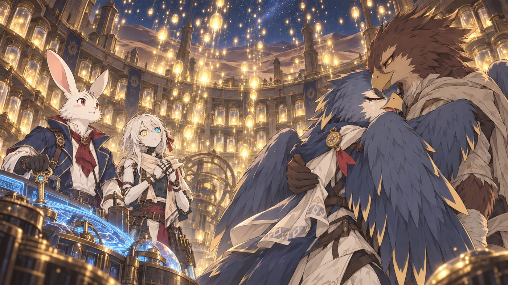
大廳暗了下來，只剩操作台和伊瑟胸口的光還亮著。
「爐沒有熄。」伊瑟看著台面，小聲說，「外面還會有被勾住的靈魂飄進來。可是只要管理者在，每一個都能放它們回家。」
她停了一下。「一個人守著太久，會寂寞。我查過了，這叫『寂寞』。……所以我留下來陪你。這是我自己決定的。」
傑爾特伸手摸了摸她的頭。
「那真是太好了。」
EPILOGUE尾聲
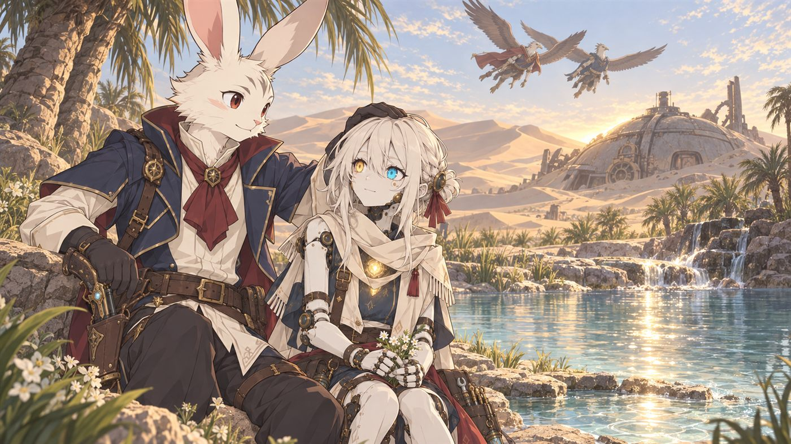
收魂爐沒有熄滅。世界上仍然會有被汙穢勾住的靈魂飄進沙底，但從此以後，這裡不再把它們關起來當燃料，而是每晚把它們放回家。傑爾特成了沉砂工坊的守門人，住在星砂綠洲與工坊之間。泉水慢慢回清，孩子們再也沒聽過夜裡的嗶嗶聲。
伊瑟選擇留下來陪他。她把被摸頭的那種感覺，在資料庫裡記成了「喜歡」。約會的地點，大概就是綠洲泉邊。
颯羽和哥哥成了工坊與綠洲之間最常出現的嚮導。她嘴上還是叫他「兔子」，但商隊都知道，誰敢找守門人麻煩，就是跟她過不去。
收藏家失去了燃料，也失去了復活的夢，默默離開了沙漠。有人說在白塔城又看見他，只是他不再戴面具。
一封從綠洲寄出的信會送到公會櫃檯，另一封送到學院。欠艾琳的那場下午茶，傑爾特還記著。教授讀信時，大概會把茶灑出來吧。
一隻白兔紳士出門去找愛情和人生的目標，最後在沙底下找到了一個需要他的位置，身邊還多了一個會發光的人。
這不是完美的結局，卻很溫柔。
——結局：沉砂的守門人——